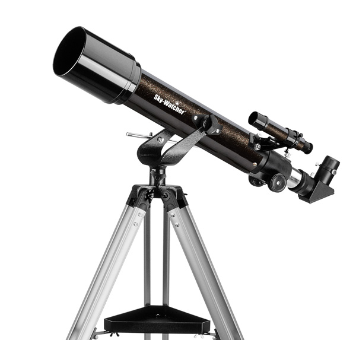

SkyWatcher Mercury 705 - 70/500 AZ2
Ez a legolcsóbb kistávcső mely 70mm-es objektívvel rendelkezik. Kiváló kezdő műszer gyerekeknek is, hiszen könnyű kezelni, így egyszerűen ismerkedhetnek meg pl. a Hold krátereivel és a Szaturnusz gyűrűivel. 70mm-es Fraunhofer objektívje fényerős, mégis jó leképezést garantál.
A termék részletes leírása
A 70 mm-es átmérőjű objektívvel szerelt kis lencsés távcső a csillagászattal történő ismerkedésre való, emellett hatékony utazótávcső is. AZ2 mechanikája egyszerűen kezelhető, használata könnyedén elsajátítható.
A 70/500-as modell kompakt mérete még gyerekeknek is könnyedén kezelhető, könnyebb az égi pozicionálás. A tartozék 25 mm-es és 10 mm-es Barium okulárokkal elérhető nagyítása 20x és 50x-es, mely további opcionális okulárokkal természetesen bővíthető (kb 125x-ig). Sét égbolton élmény vele a mélyég-objektumok (csillaghalmazok, ködök, galaxisok) között barangolni, és természetesen a Naprendszer égitestjei is nagyon szépen megfigyelhetőek ezzel a műszerrel.
A Hold csodaszép látványt nyújt: felszínén rengeteg krátert és foltot lehet látni már az alap, 20x és 50x-es nagyításokkal is. A bolygók közül a Jupiter és a Szaturnusz kiválóan tanulmányozható: a Jupiter holdjait és a Szaturnusz gyűrűjét is megpillanthatjuk. A Vénusz fázisai, a Mars piciny korongja (szerencsés esetben hósapkái és egy-két sötét foltja) is kivehető, mivel a nagyítást tovább növelhetjük (egészen kb.120x-ig) anélkül, hogy a kép elhomályosodna. Az Uránusz és a Neptunusz csillagokként látszanak. A megfelelő szűrővel a Nap felszínén láthatjuk a napfoltokat. (Vigyázat! Szűrő nélkül távcsővel a Napba nézni tilos!) A Naprendszeren kívüli világba is kimerészkedhetünk, a legfényesebb csillaghalmazok (pl. Fiastyúk, M44, vagy a fényes Messier-halmazok) még városi égbolton is megfigyelhetőek velük. Sötét égboltú helyen ezek a kis műszerek megtáltosodnak, és számos halmaz, galaxis (pl. Androméda-galaxis) és köd (Orion-köd, Lagúna-köd, stb.) is észrevehető. A csomag tartalma két Barium okulár (10 és 25mm), ám további szabványos okulárok vásárlásával a teljes ajánlott nagyítástartomány kihasználható, 12x-120x-ig. A tartozék 90 fokos zenittükör a távcsőbe való betekintést teszi kényelmessé. A fókuszírozó szabvány méretű 31,7mm-es fogasléces, mely fékkel és T2 menettel van ellátva. Ezzel a távcsővel még nem lehet komoly fényképeket készíteni, de pl egy mobiltelefonnal a Holdról és a Napról (csak szűrőn keresztül) már szép képek készíthetőek.
A távcső lelke, a 70 mm-es átmérőjű és 500 mm-es fókuszú objektív már a nagyobb lencsés távcsövek (refraktorok) felépítésével rendelkezik. A Fraunhofer-típusú légréses akromatikus objektív színkorrekciója és képélessége a viszonylag fényerős kivitel ellenére kimagasló, így a távcsőnek nagy nagyításokon is szép éles a képe. Minden üveg-levegő felülete többrétegű antireflexiós bevonattal ellátott, hogy a képkontraszt és fényáteresztés a lehető legnagyobb legyen.
A tartozék AZ2-es állvány egyszerűen kezelhető, vízszintesen és függőlegesen mozgathatózért nagyon könnyen elsajátítható a használata, így a távcsővel könnyű a keresés és a célzás még gyerekeknek is.
Kinek ajánljuk? Elsősorban gyerekeknek, akik nagyjából 8-10 éves kortól akár önállóan is tudják már ezeket használni. De természetesen kiváló családi műszerek is lehetnek, hiszen szülői segítséggel az egészen kis gyermekek is részesülhetnek első távcsöves élményeikben, és felnőtteknek is élmény lehet az égbolttal való ismerkedés.